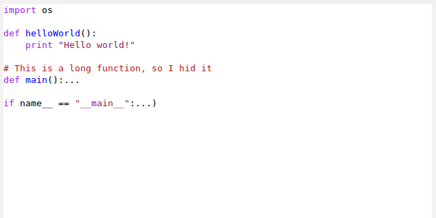

Code folding in Emacs Viper-Mode
Code folding is a feature I’ve never really used, and for the most part seem to have done find without. I generally use search to navigate from place to place in my code, but I realize this isn’t always the most efficient way to go, and code folding is very useful in a couple aspects:
- It helps focus me on what particular method or class I’m working on (way harder to tell when you’ve got several bunches of code in front of you at once)
- Getting a good idea of the structure of the code (with everything folded, it’s much easier to see)
So I decided to play around with folding with my current development environment. I use Emacs as my base, but viper-mode for the actual text editing.
Emacs has some pretty good folding tools built-in. Namely, these are FoldingMode and HideShow. I admit I didn’t play around with FoldingMode a lot, as using it seems to involve manually adding the folding points, something which I think is unnecessary 90% of the time. Ideally, I’m looking for a folding extension that automatically determines folding points, and leaves things as hands-off for me as possible. One should be able to open a file, fold it up, and then open and fold as necessary. I’m not looking to waste time adding commented blocks of folding everywhere.
Thats where HideShow comes in. Armed with rules for an array of programming languages, HideShow automatically looks for these patterns and sets folding points appropriately. Exactly what I’m looking for. Simply loading hideshow using .emacs:
(load-library "hideshow")
And activate the hideshow minor mode whenever you load the major mode of your choice (for me it’s Python):
(add-hook 'python-mode-hook 'hs-minor-mode)
Now you have all the access to the wonderful world of dynamic folding! Unfortunately, I didn’t really like the cumbersome keystrokes:
- C-c @ M-C-s to unfold all
- C-c @ C-h to fold
- C-c @ C-s to unfold
- C-c @ M-C-h to fold all
- C-c @ C-c to toggle folding
Yeah, a six key-stroke succession is too much for me. So I assigned these bindings to almost the same folding commands as VIM:
- zm to unfold
- zr to fold
- zM to unfold all
- zR to fold all
- zt to toggle
To do this, I added configuration into the .viper file:
(define-key viper-vi-global-user-map "zt" 'hs-toggle-hiding)
(define-key viper-vi-global-user-map "zM" 'hs-hide-all)
(define-key viper-vi-global-user-map "zm" 'hs-hide-block)
(define-key viper-vi-global-user-map "zR" 'hs-show-all)
(define-key viper-vi-global-user-map "zr" 'hs-show-block)
(viper-vi-global-user-map tell viper it’s for any buffer in any state with viper as a major mode). So far, this is working like a charm for me. Here’s a screenshot with it at work:

Feel free to comment if you have ideas/improvements!